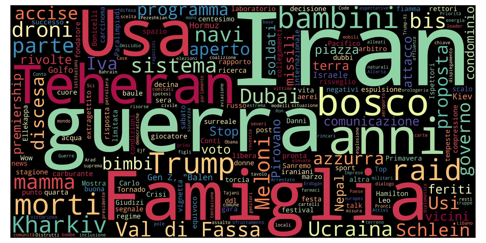
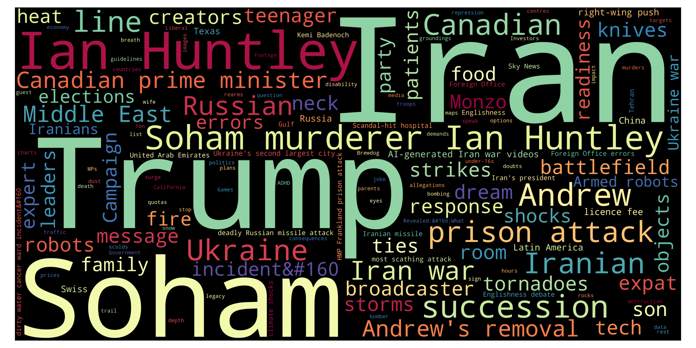

European News Dashboard
Daily view
Last update: 17 Mar 2026, 12:48 CET
🇮🇹 Italy — 17 Mar 2026
Updated: 17 Mar 2026, 12:48 CETWordcloud

Top 10 unigrams
| Term | Frequency |
|---|---|
| morto | 7 |
| iran | 6 |
| trump | 5 |
| idf | 4 |
| ferito | 4 |
| nigeria | 4 |
| guerra | 3 |
| esplosione | 3 |
| attentato | 3 |
| suicida | 3 |
Top 10 phrases
| Term | Frequency |
|---|---|
| ali larijani | 2 |
| attentati suicidi | 2 |
| centro medico | 2 |
Top 10 new terms (not present on previous day)
| Term | Current day frequency |
|---|---|
| idf | 4 |
| nigeria | 4 |
| attentato | 3 |
| suicida | 3 |
| proiettile | 2 |
| afghanistan | 2 |
| kabul | 2 |
| unità | 2 |
| ospedale | 2 |
| baghdad | 2 |
Top 10 increasing terms (vs previous day)
| Term | Difference | Current day frequency | Previous day frequency |
|---|---|---|---|
| morto | 6 | 7 | 1 |
| esplosione | 2 | 3 | 1 |
| trump | 2 | 5 | 3 |
| ferito | 2 | 4 | 2 |
| raid | 1 | 3 | 2 |
| proposta | 1 | 2 | 1 |
| petrolio | 1 | 2 | 1 |
Top 10 decreasing terms (vs previous day)
| Term | Difference | Current day frequency | Previous day frequency |
|---|---|---|---|
| meloni | -6 | 1 | 7 |
| missione | -4 | 1 | 5 |
| energia | -4 | 1 | 5 |
| usa | -3 | 3 | 6 |
| riforma | -2 | 1 | 3 |
| roma | -2 | 2 | 4 |
| razzo | -2 | 1 | 3 |
| gas | -2 | 1 | 3 |
| iran | -2 | 6 | 8 |
| drone | -2 | 1 | 3 |
🇬🇧 UK — 17 Mar 2026
Updated: 17 Mar 2026, 12:48 CETWordcloud

Top 10 unigrams
| Term | Frequency |
|---|---|
| iran | 19 |
| trump | 12 |
| starmer | 6 |
| kent | 5 |
| meningitis | 4 |
| attack | 4 |
| kabul | 4 |
| scotland | 4 |
| cuba | 4 |
| israel | 4 |
Top 10 phrases
| Term | Frequency |
|---|---|
| iran war | 6 |
| ali larijani | 3 |
| trump barbs | 2 |
| chris mason | 2 |
| pakistan air strike | 2 |
| kabul drug rehab centre | 2 |
| ukraine defence pact | 2 |
| quantum computing | 2 |
| political peril | 2 |
| us petrol prices | 2 |
Top 10 new terms (not present on previous day)
| Term | Current day frequency |
|---|---|
| israel | 4 |
| kabul | 4 |
| tech | 3 |
| ali larijani | 3 |
| temperature | 3 |
| pakistan | 3 |
| surge | 3 |
| suicide attacks | 2 |
| peace | 2 |
| sri lanka | 2 |
Top 10 increasing terms (vs previous day)
| Term | Difference | Current day frequency | Previous day frequency |
|---|---|---|---|
| attack | 3 | 4 | 1 |
| vaccine | 2 | 3 | 1 |
| politic | 2 | 3 | 1 |
| meningitis | 2 | 4 | 2 |
| cuba | 2 | 4 | 2 |
| scotland | 2 | 4 | 2 |
| flight | 1 | 2 | 1 |
| husband | 1 | 2 | 1 |
| response | 1 | 2 | 1 |
| starmer | 1 | 6 | 5 |
Top 10 decreasing terms (vs previous day)
| Term | Difference | Current day frequency | Previous day frequency |
|---|---|---|---|
| iran | -15 | 19 | 34 |
| iran war | -6 | 6 | 12 |
| ally | -4 | 2 | 6 |
| trump | -3 | 12 | 15 |
| cost | -3 | 1 | 4 |
| dubai | -2 | 2 | 4 |
| price | -2 | 2 | 4 |
| bill | -2 | 1 | 3 |
| hormuz | -2 | 2 | 4 |
| risk | -2 | 2 | 4 |
🇮🇹 Italy — 16 Mar 2026
Updated: 17 Mar 2026, 12:48 CETWordcloud

Top 10 unigrams
| Term | Frequency |
|---|---|
| iran | 8 |
| meloni | 7 |
| oscar | 6 |
| kiev | 6 |
| usa | 6 |
| missione | 5 |
| energia | 5 |
| libano | 5 |
| aspides | 5 |
| tajani | 5 |
Top 10 phrases
| Term | Frequency |
|---|---|
| sean penn | 3 |
| mar rosso | 3 |
| isola di kharg | 2 |
| stretto di hormuz | 2 |
| stretto hormuz | 2 |
| relazioni diplomatiche | 2 |
| mojtaba khamenei | 2 |
Top 10 new terms (not present on previous day)
| Term | Current day frequency |
|---|---|
| energia | 5 |
| aspides | 5 |
| der | 4 |
| von | 4 |
| leyen | 4 |
| mar rosso | 3 |
| sean penn | 3 |
| gas | 3 |
| razzo | 3 |
| cirielli | 3 |
Top 10 increasing terms (vs previous day)
| Term | Difference | Current day frequency | Previous day frequency |
|---|---|---|---|
| meloni | 4 | 7 | 3 |
| kiev | 4 | 6 | 2 |
| oscar | 3 | 6 | 3 |
| usa | 3 | 6 | 3 |
| libano | 3 | 5 | 2 |
| referendum | 2 | 3 | 1 |
| missione | 2 | 5 | 3 |
| ucraina | 2 | 3 | 1 |
| russo | 2 | 3 | 1 |
| giustizia | 2 | 3 | 1 |
Top 10 decreasing terms (vs previous day)
| Term | Difference | Current day frequency | Previous day frequency |
|---|---|---|---|
| iran | -5 | 8 | 13 |
| attacco | -4 | 3 | 7 |
| base | -4 | 4 | 8 |
| voto | -3 | 2 | 5 |
| drone | -3 | 3 | 6 |
| sindaco | -3 | 1 | 4 |
| cerimonia | -2 | 1 | 3 |
| israele | -1 | 1 | 2 |
| news | -1 | 2 | 3 |
| anticristo | -1 | 1 | 2 |
🇬🇧 UK — 16 Mar 2026
Updated: 17 Mar 2026, 12:48 CETWordcloud

Top 10 unigrams
| Term | Frequency |
|---|---|
| iran | 34 |
| trump | 15 |
| bbc | 7 |
| ally | 6 |
| starmer | 5 |
| cost | 4 |
| risk | 4 |
| price | 4 |
| dubai | 4 |
| kent | 4 |
Top 10 phrases
| Term | Frequency |
|---|---|
| iran war | 12 |
| wary allies | 3 |
| trump iran crisis | 3 |
| quick fix | 3 |
| wheelie bin | 3 |
| wider war | 3 |
| car park firm | 2 |
| nearly jobs | 2 |
| strait of hormuz | 2 |
| dubai airport | 2 |
Top 10 new terms (not present on previous day)
| Term | Current day frequency |
|---|---|
| bbc | 7 |
| starmer | 5 |
| dubai | 4 |
| moment | 3 |
| quick fix | 3 |
| expert | 3 |
| state | 3 |
| trump iran crisis | 3 |
| 10bn | 3 |
| wider war | 3 |
Top 10 increasing terms (vs previous day)
| Term | Difference | Current day frequency | Previous day frequency |
|---|---|---|---|
| iran | 24 | 34 | 10 |
| iran war | 10 | 12 | 2 |
| trump | 9 | 15 | 6 |
| ally | 4 | 6 | 2 |
| price | 2 | 4 | 2 |
| talk | 2 | 3 | 1 |
| risk | 2 | 4 | 2 |
| thousand | 2 | 3 | 1 |
| australia | 2 | 4 | 2 |
| kent | 2 | 4 | 2 |
Top 10 decreasing terms (vs previous day)
| Term | Difference | Current day frequency | Previous day frequency |
|---|---|---|---|
| london | -4 | 3 | 7 |
| mother | -4 | 2 | 6 |
| iranian | -2 | 2 | 4 |
| student | -2 | 3 | 5 |
| israeli | -2 | 2 | 4 |
| captain | -2 | 1 | 3 |
| murder | -2 | 1 | 3 |
| election | -1 | 1 | 2 |
| attack | -1 | 1 | 2 |
| bin | -1 | 2 | 3 |
🇮🇹 Italy — 15 Mar 2026
Updated: 17 Mar 2026, 12:48 CETWordcloud

Top 10 unigrams
| Term | Frequency |
|---|---|
| iran | 13 |
| base | 8 |
| attacco | 7 |
| kuwait | 7 |
| francia | 7 |
| drone | 6 |
| guerra | 5 |
| paralimpiadi | 5 |
| voto | 5 |
| sindaco | 4 |
Top 10 phrases
| Term | Frequency |
|---|---|
| peter thiel | 3 |
| stretto di hormuz | 3 |
| serie a | 2 |
| mojtaba khamenei | 2 |
| altri paesi | 2 |
Top 10 new terms (not present on previous day)
| Term | Current day frequency |
|---|---|
| base | 8 |
| francia | 7 |
| kuwait | 7 |
| netanyahu | 4 |
| parigi | 4 |
| caffè | 3 |
| news | 3 |
| missione | 3 |
| sistema | 3 |
| stretto di hormuz | 3 |
Top 10 increasing terms (vs previous day)
| Term | Difference | Current day frequency | Previous day frequency |
|---|---|---|---|
| voto | 4 | 5 | 1 |
| attacco | 4 | 7 | 3 |
| paralimpiadi | 3 | 5 | 2 |
| sindaco | 3 | 4 | 1 |
| drone | 3 | 6 | 3 |
| accordo | 2 | 3 | 1 |
| aereo | 1 | 2 | 1 |
| test | 1 | 2 | 1 |
| roma | 1 | 4 | 3 |
| altro | 1 | 2 | 1 |
Top 10 decreasing terms (vs previous day)
| Term | Difference | Current day frequency | Previous day frequency |
|---|---|---|---|
| usa | -8 | 3 | 11 |
| sanzione | -7 | 1 | 8 |
| iran | -6 | 13 | 19 |
| russia | -4 | 1 | 5 |
| guerra | -3 | 5 | 8 |
| anno | -3 | 1 | 4 |
| trump | -2 | 2 | 4 |
| israele | -2 | 2 | 4 |
| meloni | -2 | 3 | 5 |
| referendum | -2 | 1 | 3 |
🇬🇧 UK — 15 Mar 2026
Updated: 17 Mar 2026, 12:48 CETWordcloud

Top 10 unigrams
| Term | Frequency |
|---|---|
| iran | 10 |
| london | 7 |
| mother | 6 |
| trump | 6 |
| student | 5 |
| death | 4 |
| fee | 4 |
| idf | 4 |
| iranian | 4 |
| israeli | 4 |
Top 10 phrases
| Term | Frequency |
|---|---|
| al quds day | 5 |
| unseen photo | 3 |
| west bank | 3 |
| strait of hormuz | 3 |
| al quds demonstration | 3 |
| ed miliband | 3 |
| al quds rally | 3 |
| middle east | 3 |
| internet blocks | 2 |
| dead daughter | 2 |
Top 10 new terms (not present on previous day)
| Term | Current day frequency |
|---|---|
| student | 5 |
| idf | 4 |
| iranian | 4 |
| israeli | 4 |
| fee | 4 |
| west bank | 3 |
| ed miliband | 3 |
| european | 3 |
| abortion | 3 |
| power | 3 |
Top 10 increasing terms (vs previous day)
| Term | Difference | Current day frequency | Previous day frequency |
|---|---|---|---|
| mother | 5 | 6 | 1 |
| death | 2 | 4 | 2 |
| al quds day | 2 | 5 | 3 |
| al quds rally | 1 | 3 | 2 |
| prison | 1 | 2 | 1 |
| bet | 1 | 2 | 1 |
| middle east | 1 | 3 | 2 |
| medium | 1 | 2 | 1 |
Top 10 decreasing terms (vs previous day)
| Term | Difference | Current day frequency | Previous day frequency |
|---|---|---|---|
| iran | -14 | 10 | 24 |
| iran war | -6 | 2 | 8 |
| trump | -3 | 6 | 9 |
| call | -3 | 1 | 4 |
| protester | -2 | 2 | 4 |
| ally | -2 | 2 | 4 |
| fall | -1 | 2 | 3 |
| threat | -1 | 1 | 2 |
| newborn baby | -1 | 2 | 3 |
| strait | -1 | 2 | 3 |
🇮🇹 Italy — 14 Mar 2026
Updated: 17 Mar 2026, 12:48 CETWordcloud

Top 10 unigrams
| Term | Frequency |
|---|---|
| iran | 19 |
| usa | 11 |
| guerra | 8 |
| sanzione | 8 |
| meloni | 5 |
| ebraico | 5 |
| esplosione | 5 |
| missile | 5 |
| amsterdam | 5 |
| russia | 5 |
Top 10 phrases
| Term | Frequency |
|---|---|
| isola di kharg | 6 |
| scuola ebraica | 4 |
| israele libano | 2 |
| filosofo tedesco | 2 |
| casa bianca | 2 |
| medio oriente | 2 |
| petrolio russo | 2 |
| sanzioni individuali | 2 |
| serie a | 2 |
| serie turno | 2 |
Top 10 new terms (not present on previous day)
| Term | Current day frequency |
|---|---|
| guerra | 8 |
| esplosione | 5 |
| missile | 5 |
| ebraico | 5 |
| amsterdam | 5 |
| israele | 4 |
| scuola ebraica | 4 |
| paesi | 3 |
| roma | 3 |
| piazza | 3 |
Top 10 increasing terms (vs previous day)
| Term | Difference | Current day frequency | Previous day frequency |
|---|---|---|---|
| isola di kharg | 4 | 6 | 2 |
| russia | 4 | 5 | 1 |
| anno | 2 | 4 | 2 |
| sanzione | 2 | 8 | 6 |
| drone | 2 | 3 | 1 |
| paralimpiadi | 1 | 2 | 1 |
| referendum | 1 | 3 | 2 |
| tajani | 1 | 2 | 1 |
Top 10 decreasing terms (vs previous day)
| Term | Difference | Current day frequency | Previous day frequency |
|---|---|---|---|
| attacco | -4 | 3 | 7 |
| medio oriente | -3 | 2 | 5 |
| nave | -2 | 2 | 4 |
| trump | -2 | 4 | 6 |
| ucraina | -2 | 2 | 4 |
| giorno | -2 | 3 | 5 |
| m5s | -2 | 1 | 3 |
| putin | -2 | 1 | 3 |
| mese | -1 | 1 | 2 |
| vertice | -1 | 1 | 2 |
🇬🇧 UK — 14 Mar 2026
Updated: 17 Mar 2026, 12:48 CETWordcloud

Top 10 unigrams
| Term | Frequency |
|---|---|
| iran | 24 |
| trump | 9 |
| london | 8 |
| warship | 6 |
| gulf | 6 |
| ally | 4 |
| book | 4 |
| call | 4 |
| protester | 4 |
| harry | 4 |
Top 10 phrases
| Term | Frequency |
|---|---|
| iran war | 8 |
| gulf states | 3 |
| kharg island | 3 |
| wheelie bin | 3 |
| newborn baby | 3 |
| john swinney | 3 |
| al quds day | 3 |
| iran football | 2 |
| deranged conspiracy | 2 |
| iran kharg island | 2 |
Top 10 new terms (not present on previous day)
| Term | Current day frequency |
|---|---|
| gulf | 6 |
| warship | 6 |
| book | 4 |
| meghan | 4 |
| protester | 4 |
| harry | 4 |
| bomb | 3 |
| fall | 3 |
| bin | 3 |
| girl | 3 |
Top 10 increasing terms (vs previous day)
| Term | Difference | Current day frequency | Previous day frequency |
|---|---|---|---|
| trump | 6 | 9 | 3 |
| iran | 5 | 24 | 19 |
| call | 3 | 4 | 1 |
| state | 2 | 3 | 1 |
| hormuz | 2 | 3 | 1 |
| fear | 2 | 3 | 1 |
| missile | 1 | 2 | 1 |
| starmer | 1 | 3 | 2 |
| iran war | 1 | 8 | 7 |
| ally | 1 | 4 | 3 |
Top 10 decreasing terms (vs previous day)
| Term | Difference | Current day frequency | Previous day frequency |
|---|---|---|---|
| middle east | -4 | 2 | 6 |
| driver | -3 | 1 | 4 |
| economy | -3 | 1 | 4 |
| mandelson | -2 | 1 | 3 |
| hope | -2 | 1 | 3 |
| charge | -2 | 1 | 3 |
| husband | -2 | 1 | 3 |
| price | -2 | 2 | 4 |
| teen | -1 | 1 | 2 |
| record | -1 | 1 | 2 |
🇮🇹 Italy — 13 Mar 2026
Updated: 17 Mar 2026, 12:48 CETWordcloud

Top 10 unigrams
| Term | Frequency |
|---|---|
| iran | 19 |
| usa | 11 |
| attacco | 7 |
| sanzione | 6 |
| trump | 6 |
| giorno | 5 |
| energia | 5 |
| meloni | 5 |
| teheran | 5 |
| zelensky | 4 |
Top 10 phrases
| Term | Frequency |
|---|---|
| medio oriente | 5 |
| consiglio supremo | 3 |
| petroliera russa | 3 |
| petrolio russo | 3 |
| guerra iran | 3 |
| mila marines | 2 |
| palazzo chigi | 2 |
| isola di kharg | 2 |
| consiglio supremo di difesa | 2 |
| crans montana | 2 |
Top 10 new terms (not present on previous day)
| Term | Current day frequency |
|---|---|
| sanzione | 6 |
| medio oriente | 5 |
| giorno | 5 |
| ucraina | 4 |
| nave | 4 |
| libano | 3 |
| m5s | 3 |
| guerra iran | 3 |
| epstein | 3 |
| turchia | 3 |
Top 10 increasing terms (vs previous day)
| Term | Difference | Current day frequency | Previous day frequency |
|---|---|---|---|
| usa | 7 | 11 | 4 |
| energia | 4 | 5 | 1 |
| iran | 4 | 19 | 15 |
| idf | 2 | 3 | 1 |
| zelensky | 2 | 4 | 2 |
| pace | 2 | 3 | 1 |
| militare | 2 | 3 | 1 |
| mese | 1 | 2 | 1 |
| regime | 1 | 2 | 1 |
| raid | 1 | 2 | 1 |
Top 10 decreasing terms (vs previous day)
| Term | Difference | Current day frequency | Previous day frequency |
|---|---|---|---|
| base | -8 | 1 | 9 |
| meloni | -8 | 5 | 13 |
| opposizione | -4 | 1 | 5 |
| sparatoria | -3 | 1 | 4 |
| erbil | -3 | 2 | 5 |
| governo | -2 | 1 | 3 |
| sinagoga | -2 | 4 | 6 |
| attacco | -2 | 7 | 9 |
| crisi | -2 | 1 | 3 |
| iraniano | -2 | 1 | 3 |
🇬🇧 UK — 13 Mar 2026
Updated: 17 Mar 2026, 12:48 CETWordcloud

Top 10 unigrams
| Term | Frequency |
|---|---|
| iran | 19 |
| retailer | 7 |
| london | 7 |
| minister | 6 |
| government | 5 |
| sanction | 5 |
| mps | 5 |
| economy | 4 |
| driver | 4 |
| price | 4 |
Top 10 phrases
| Term | Frequency |
|---|---|
| petrol retailers | 7 |
| iran war | 7 |
| middle east | 6 |
| bbc world service | 4 |
| six crew | 3 |
| post office | 3 |
| inflammatory language | 3 |
| peter mandelson | 3 |
| jeffrey epstein | 3 |
| attempted murder | 3 |
Top 10 new terms (not present on previous day)
| Term | Current day frequency |
|---|---|
| petrol retailers | 7 |
| middle east | 6 |
| sanction | 5 |
| government | 5 |
| bbc world service | 4 |
| cheltenham | 4 |
| andrew | 4 |
| economy | 4 |
| driver | 4 |
| charge | 3 |
Top 10 increasing terms (vs previous day)
| Term | Difference | Current day frequency | Previous day frequency |
|---|---|---|---|
| retailer | 6 | 7 | 1 |
| london | 5 | 7 | 2 |
| mps | 4 | 5 | 1 |
| minister | 3 | 6 | 3 |
| life | 2 | 3 | 1 |
| husband | 2 | 3 | 1 |
| benefit | 1 | 2 | 1 |
| holiday | 1 | 2 | 1 |
| threat | 1 | 2 | 1 |
| talk | 1 | 2 | 1 |
Top 10 decreasing terms (vs previous day)
| Term | Difference | Current day frequency | Previous day frequency |
|---|---|---|---|
| iran | -8 | 19 | 27 |
| mandelson | -6 | 3 | 9 |
| starmer | -6 | 2 | 8 |
| police | -3 | 2 | 5 |
| time | -3 | 1 | 4 |
| vehicle | -2 | 1 | 3 |
| scientist | -2 | 1 | 3 |
| putin | -2 | 2 | 4 |
| file | -2 | 3 | 5 |
| iran war | -2 | 7 | 9 |
🇮🇹 Italy — 12 Mar 2026
Updated: 17 Mar 2026, 12:48 CETWordcloud

Top 10 unigrams
| Term | Frequency |
|---|---|
| iran | 15 |
| meloni | 13 |
| guerra | 9 |
| base | 9 |
| attacco | 9 |
| trump | 7 |
| sinagoga | 6 |
| petrolio | 5 |
| erbil | 5 |
| schlein | 5 |
Top 10 phrases
| Term | Frequency |
|---|---|
| mojtaba khamenei | 4 |
| enrica bonaccorti | 3 |
| indian wells | 2 |
| stretto di hormuz | 2 |
| jake paul | 2 |
Top 10 new terms (not present on previous day)
| Term | Current day frequency |
|---|---|
| guerra | 9 |
| sinagoga | 6 |
| erbil | 5 |
| michigan | 5 |
| sparatoria | 4 |
| enrica bonaccorti | 3 |
| governo | 3 |
| hezbollah | 3 |
| figlio | 3 |
| jake paul | 2 |
Top 10 increasing terms (vs previous day)
| Term | Difference | Current day frequency | Previous day frequency |
|---|---|---|---|
| attacco | 6 | 9 | 3 |
| base | 6 | 9 | 3 |
| trump | 5 | 7 | 2 |
| schlein | 4 | 5 | 1 |
| petrolio | 3 | 5 | 2 |
| mondo | 2 | 3 | 1 |
| addio | 2 | 3 | 1 |
| appello | 2 | 4 | 2 |
| posto | 2 | 3 | 1 |
| mojtaba khamenei | 2 | 4 | 2 |
Top 10 decreasing terms (vs previous day)
| Term | Difference | Current day frequency | Previous day frequency |
|---|---|---|---|
| usa | -11 | 4 | 15 |
| meloni | -7 | 13 | 20 |
| iran | -7 | 15 | 22 |
| stretto di hormuz | -6 | 2 | 8 |
| barile | -4 | 2 | 6 |
| milione | -4 | 2 | 6 |
| europa | -3 | 2 | 5 |
| news | -2 | 1 | 3 |
| iraniano | -2 | 3 | 5 |
| aereo | -2 | 2 | 4 |
🇬🇧 UK — 12 Mar 2026
Updated: 17 Mar 2026, 12:48 CETWordcloud

Top 10 unigrams
| Term | Frequency |
|---|---|
| iran | 27 |
| iranian | 10 |
| mandelson | 9 |
| starmer | 8 |
| file | 5 |
| police | 5 |
| price | 5 |
| bbc | 5 |
| name | 4 |
| attack | 4 |
Top 10 phrases
| Term | Frequency |
|---|---|
| iran war | 9 |
| putin hidden hand | 4 |
| iranian drones | 3 |
| mandelson appointment | 3 |
| israeli military | 3 |
| mandelson files | 3 |
| county durham | 3 |
| court bailiff | 3 |
| petrol prices | 3 |
| al quds | 3 |
Top 10 new terms (not present on previous day)
| Term | Current day frequency |
|---|---|
| price | 5 |
| police | 5 |
| dubai | 4 |
| gulf | 4 |
| russia | 4 |
| name | 4 |
| healey | 4 |
| strike | 4 |
| source | 4 |
| putin | 4 |
Top 10 increasing terms (vs previous day)
| Term | Difference | Current day frequency | Previous day frequency |
|---|---|---|---|
| iran war | 5 | 9 | 4 |
| iranian | 4 | 10 | 6 |
| iraq | 2 | 4 | 2 |
| time | 2 | 4 | 2 |
| israel | 2 | 4 | 2 |
| bbc | 2 | 5 | 3 |
| protester | 1 | 2 | 1 |
| starmer | 1 | 8 | 7 |
| message | 1 | 2 | 1 |
| release | 1 | 2 | 1 |
Top 10 decreasing terms (vs previous day)
| Term | Difference | Current day frequency | Previous day frequency |
|---|---|---|---|
| australian | -6 | 2 | 8 |
| document | -5 | 1 | 6 |
| labour | -4 | 1 | 5 |
| mandelson | -3 | 9 | 12 |
| london | -3 | 2 | 5 |
| trump | -3 | 3 | 6 |
| epstein | -2 | 2 | 4 |
| link | -2 | 1 | 3 |
| takeaway | -2 | 1 | 3 |
| cup | -2 | 1 | 3 |
🇮🇹 Italy — 11 Mar 2026
Updated: 17 Mar 2026, 12:48 CETWordcloud

Top 10 unigrams
| Term | Frequency |
|---|---|
| iran | 22 |
| meloni | 20 |
| usa | 15 |
| barile | 6 |
| milione | 6 |
| risoluzione | 6 |
| iraniano | 5 |
| morto | 5 |
| europa | 5 |
| israele | 5 |
Top 10 phrases
| Term | Frequency |
|---|---|
| stretto di hormuz | 8 |
| medio oriente | 5 |
| via libera | 3 |
| guerra iran | 3 |
| mojtaba khamenei | 2 |
Top 10 new terms (not present on previous day)
| Term | Current day frequency |
|---|---|
| barile | 6 |
| milione | 6 |
| medio oriente | 5 |
| israele | 5 |
| iraniano | 5 |
| europa | 5 |
| aereo | 4 |
| senato | 4 |
| rischio | 3 |
| mld | 3 |
Top 10 increasing terms (vs previous day)
| Term | Difference | Current day frequency | Previous day frequency |
|---|---|---|---|
| meloni | 14 | 20 | 6 |
| usa | 10 | 15 | 5 |
| stretto di hormuz | 5 | 8 | 3 |
| risoluzione | 5 | 6 | 1 |
| iran | 4 | 22 | 18 |
| bus | 3 | 4 | 1 |
| opposizione | 3 | 4 | 1 |
| libero | 3 | 4 | 1 |
| maggioranza | 3 | 4 | 1 |
| bomba | 2 | 3 | 1 |
Top 10 decreasing terms (vs previous day)
| Term | Difference | Current day frequency | Previous day frequency |
|---|---|---|---|
| referendum | -4 | 2 | 6 |
| teheran | -3 | 3 | 6 |
| nucleare | -2 | 1 | 3 |
| famiglia | -2 | 1 | 3 |
| raid | -2 | 1 | 3 |
| greggio | -2 | 1 | 3 |
| salvini | -1 | 1 | 2 |
| bambino | -1 | 1 | 2 |
| vertice | -1 | 1 | 2 |
| bilancio | -1 | 1 | 2 |
🇬🇧 UK — 11 Mar 2026
Updated: 17 Mar 2026, 12:48 CETWordcloud

Top 10 unigrams
| Term | Frequency |
|---|---|
| iran | 26 |
| mandelson | 12 |
| australian | 8 |
| file | 7 |
| starmer | 7 |
| court | 6 |
| document | 6 |
| trump | 6 |
| iranian | 6 |
| couple | 5 |
Top 10 phrases
| Term | Frequency |
|---|---|
| reputational risk | 4 |
| mandelson files | 4 |
| iran war | 4 |
| mandelson appointment | 4 |
| middle east | 4 |
| army officers | 3 |
| ian huntley | 3 |
| soham killer ian huntley | 3 |
| oil price | 3 |
| extraordinary announcement | 3 |
Top 10 new terms (not present on previous day)
| Term | Current day frequency |
|---|---|
| mandelson | 12 |
| file | 7 |
| document | 6 |
| kneecap | 5 |
| mandelson files | 4 |
| warning | 4 |
| reputational risk | 4 |
| mandelson appointment | 4 |
| reserve | 4 |
| cheltenham | 4 |
Top 10 increasing terms (vs previous day)
| Term | Difference | Current day frequency | Previous day frequency |
|---|---|---|---|
| australian | 6 | 8 | 2 |
| iran | 6 | 26 | 20 |
| couple | 4 | 5 | 1 |
| starmer | 3 | 7 | 4 |
| question | 2 | 3 | 1 |
| cup | 2 | 3 | 1 |
| london | 2 | 5 | 3 |
| iranian | 2 | 6 | 4 |
| punter | 1 | 2 | 1 |
| attendance | 1 | 2 | 1 |
Top 10 decreasing terms (vs previous day)
| Term | Difference | Current day frequency | Previous day frequency |
|---|---|---|---|
| court | -4 | 6 | 10 |
| family | -4 | 1 | 5 |
| iran war | -3 | 4 | 7 |
| message | -3 | 1 | 4 |
| medium | -2 | 2 | 4 |
| expert | -2 | 1 | 3 |
| victim | -2 | 3 | 5 |
| prison | -2 | 1 | 3 |
| son | -2 | 1 | 3 |
| mps | -2 | 1 | 3 |
🇮🇹 Italy — 10 Mar 2026
Updated: 17 Mar 2026, 12:48 CETWordcloud

Top 10 unigrams
| Term | Frequency |
|---|---|
| iran | 18 |
| meloni | 6 |
| teheran | 6 |
| referendum | 6 |
| usa | 5 |
| morto | 4 |
| ferito | 4 |
| anno | 4 |
| mattarella | 4 |
| svizzera | 4 |
Top 10 phrases
| Term | Frequency |
|---|---|
| stretto di hormuz | 3 |
| borse europee | 2 |
| guerra iran | 2 |
| cautela roma | 2 |
| rischio bersaglio | 2 |
Top 10 new terms (not present on previous day)
| Term | Current day frequency |
|---|---|
| teheran | 6 |
| golfo | 4 |
| svizzera | 4 |
| sal | 3 |
| conseguenza | 3 |
| mina | 3 |
| bosco | 3 |
| vinci | 3 |
| uscita | 3 |
| greggio | 3 |
Top 10 increasing terms (vs previous day)
| Term | Difference | Current day frequency | Previous day frequency |
|---|---|---|---|
| ferito | 3 | 4 | 1 |
| prezzo | 2 | 3 | 1 |
| fiamma | 2 | 3 | 1 |
| raid | 2 | 3 | 1 |
| europeo | 2 | 3 | 1 |
| referendum | 2 | 6 | 4 |
| gas | 1 | 2 | 1 |
| bufera | 1 | 2 | 1 |
| bambino | 1 | 2 | 1 |
| vertice | 1 | 2 | 1 |
Top 10 decreasing terms (vs previous day)
| Term | Difference | Current day frequency | Previous day frequency |
|---|---|---|---|
| iran | -6 | 18 | 24 |
| sindaco | -5 | 1 | 6 |
| via | -3 | 1 | 4 |
| attacco | -3 | 3 | 6 |
| russia | -3 | 2 | 5 |
| drone | -2 | 2 | 4 |
| crisi | -2 | 1 | 3 |
| esplosione | -2 | 1 | 3 |
| meloni | -2 | 6 | 8 |
| mattarella | -1 | 4 | 5 |
🇬🇧 UK — 10 Mar 2026
Updated: 17 Mar 2026, 12:48 CETWordcloud

Top 10 unigrams
| Term | Frequency |
|---|---|
| iran | 20 |
| court | 10 |
| minister | 9 |
| price | 7 |
| trump | 7 |
| death | 6 |
| family | 5 |
| victim | 5 |
| labour | 5 |
| hormuz | 5 |
Top 10 phrases
| Term | Frequency |
|---|---|
| iran war | 7 |
| middle east | 5 |
| eastern mediterranean | 4 |
| joey barton | 3 |
| soham killer ian huntley | 3 |
| ian huntley | 3 |
| media ban | 3 |
| middle east crisis | 3 |
| diplomatic economic gains | 2 |
| steve rosenberg | 2 |
Top 10 new terms (not present on previous day)
| Term | Current day frequency |
|---|---|
| court | 10 |
| death | 6 |
| victim | 5 |
| family | 5 |
| tehran | 5 |
| hormuz | 5 |
| job | 4 |
| mediterranean | 4 |
| message | 4 |
| eastern mediterranean | 4 |
Top 10 increasing terms (vs previous day)
| Term | Difference | Current day frequency | Previous day frequency |
|---|---|---|---|
| minister | 7 | 9 | 2 |
| labour | 3 | 5 | 2 |
| attack | 3 | 4 | 1 |
| expert | 2 | 3 | 1 |
| starmer | 2 | 4 | 2 |
| driver | 2 | 3 | 1 |
| child | 2 | 4 | 2 |
| power | 2 | 3 | 1 |
| fire | 2 | 3 | 1 |
| under-16 | 2 | 3 | 1 |
Top 10 decreasing terms (vs previous day)
| Term | Difference | Current day frequency | Previous day frequency |
|---|---|---|---|
| iran | -12 | 20 | 32 |
| trump | -6 | 7 | 13 |
| raf | -4 | 2 | 6 |
| drone | -4 | 2 | 6 |
| jet | -4 | 2 | 6 |
| iran war | -4 | 7 | 11 |
| footballer | -3 | 1 | 4 |
| girl | -3 | 1 | 4 |
| lawyer | -2 | 2 | 4 |
| government | -2 | 3 | 5 |
🇮🇹 Italy — 09 Mar 2026
Updated: 17 Mar 2026, 12:48 CETWordcloud

Top 10 unigrams
| Term | Frequency |
|---|---|
| iran | 24 |
| guerra | 9 |
| meloni | 8 |
| attacco | 6 |
| sindaco | 6 |
| usa | 6 |
| mattarella | 5 |
| donna | 5 |
| russia | 5 |
| drone | 4 |
Top 10 phrases
| Term | Frequency |
|---|---|
| crans montana | 4 |
| stretto di hormuz | 3 |
| guida suprema | 2 |
| principale rivale | 2 |
| istanbul imamoglu | 2 |
| casa bianca | 2 |
| famiglia bosco | 2 |
Top 10 new terms (not present on previous day)
| Term | Current day frequency |
|---|---|
| meloni | 8 |
| attacco | 6 |
| sindaco | 6 |
| russia | 5 |
| crans montana | 4 |
| turchia | 4 |
| villa | 3 |
| australia | 3 |
| magistratura | 3 |
| processo | 3 |
Top 10 increasing terms (vs previous day)
| Term | Difference | Current day frequency | Previous day frequency |
|---|---|---|---|
| iran | 5 | 24 | 19 |
| via | 3 | 4 | 1 |
| morto | 3 | 4 | 1 |
| mattarella | 3 | 5 | 2 |
| drone | 3 | 4 | 1 |
| referendum | 3 | 4 | 1 |
| nordio | 2 | 3 | 1 |
| crisi | 2 | 3 | 1 |
| paralimpiadi | 1 | 2 | 1 |
| usa | 1 | 6 | 5 |
Top 10 decreasing terms (vs previous day)
| Term | Difference | Current day frequency | Previous day frequency |
|---|---|---|---|
| trump | -14 | 4 | 18 |
| donna | -10 | 5 | 15 |
| khamenei | -4 | 1 | 5 |
| putin | -2 | 2 | 4 |
| guida suprema | -2 | 2 | 4 |
| fiamma | -2 | 1 | 3 |
| vertice | -1 | 1 | 2 |
| regime | -1 | 1 | 2 |
| esplosione | -1 | 3 | 4 |
| raid | -1 | 1 | 2 |
🇬🇧 UK — 09 Mar 2026
Updated: 17 Mar 2026, 12:48 CETWordcloud

Top 10 unigrams
| Term | Frequency |
|---|---|
| iran | 32 |
| trump | 13 |
| price | 9 |
| jet | 6 |
| drone | 6 |
| raf | 6 |
| trial | 5 |
| government | 5 |
| iranian | 5 |
| footballer | 4 |
Top 10 phrases
| Term | Frequency |
|---|---|
| iran war | 11 |
| raf jets | 6 |
| oil prices | 6 |
| middle east | 5 |
| gerry adams | 4 |
| anti muslim | 3 |
| free speech | 3 |
| ian huntley | 3 |
| nigel farage | 3 |
| glasgow central | 2 |
Top 10 new terms (not present on previous day)
| Term | Current day frequency |
|---|---|
| raf jets | 6 |
| oil prices | 6 |
| jet | 6 |
| raf | 6 |
| trial | 5 |
| gerry adams | 4 |
| jordan | 4 |
| chelsea | 4 |
| lawyer | 4 |
| bill | 3 |
Top 10 increasing terms (vs previous day)
| Term | Difference | Current day frequency | Previous day frequency |
|---|---|---|---|
| price | 7 | 9 | 2 |
| iran war | 5 | 11 | 6 |
| drone | 5 | 6 | 1 |
| girl | 3 | 4 | 1 |
| iranian | 2 | 5 | 3 |
| footballer | 2 | 4 | 2 |
| medium | 2 | 3 | 1 |
| iran | 2 | 32 | 30 |
| government | 2 | 5 | 3 |
| cyprus | 2 | 3 | 1 |
Top 10 decreasing terms (vs previous day)
| Term | Difference | Current day frequency | Previous day frequency |
|---|---|---|---|
| trump | -3 | 13 | 16 |
| starmer | -3 | 2 | 5 |
| driver | -2 | 1 | 3 |
| change | -2 | 1 | 3 |
| post | -2 | 1 | 3 |
| gulf | -1 | 3 | 4 |
| parent | -1 | 1 | 2 |
| gas | -1 | 1 | 2 |
| explosion | -1 | 1 | 2 |
| truth | -1 | 1 | 2 |
🇮🇹 Italy — 08 Mar 2026
Updated: 17 Mar 2026, 12:48 CETWordcloud

Top 10 unigrams
| Term | Frequency |
|---|---|
| iran | 19 |
| trump | 18 |
| donna | 15 |
| guerra | 8 |
| khamenei | 5 |
| voto | 5 |
| usa | 5 |
| figlio | 4 |
| tajani | 4 |
| esplosione | 4 |
Top 10 phrases
| Term | Frequency |
|---|---|
| guida suprema | 4 |
| baden württemberg | 2 |
| marina berlusconi | 2 |
| ambasciata americana | 2 |
| gen z balen | 2 |
| trasparenza salariale | 2 |
| marzo meloni | 2 |
| serie a | 2 |
Top 10 new terms (not present on previous day)
| Term | Current day frequency |
|---|---|
| putin | 4 |
| oslo | 4 |
| guida suprema | 4 |
| esplosione | 4 |
| americano | 3 |
| diritto | 3 |
| fiamma | 3 |
| aiuto | 3 |
| ostacolo | 2 |
| afd | 2 |
Top 10 increasing terms (vs previous day)
| Term | Difference | Current day frequency | Previous day frequency |
|---|---|---|---|
| trump | 14 | 18 | 4 |
| donna | 13 | 15 | 2 |
| voto | 3 | 5 | 2 |
| iraniano | 2 | 3 | 1 |
| khamenei | 2 | 5 | 3 |
| tajani | 2 | 4 | 2 |
| paese | 2 | 3 | 1 |
| leader | 1 | 3 | 2 |
| allarme | 1 | 2 | 1 |
| regime | 1 | 2 | 1 |
Top 10 decreasing terms (vs previous day)
| Term | Difference | Current day frequency | Previous day frequency |
|---|---|---|---|
| iran | -6 | 19 | 25 |
| famiglia | -4 | 2 | 6 |
| morto | -3 | 1 | 4 |
| guerra | -3 | 8 | 11 |
| stop | -2 | 1 | 3 |
| nave | -2 | 1 | 3 |
| drone | -2 | 1 | 3 |
| mamma | -2 | 1 | 3 |
| ferito | -1 | 1 | 2 |
| soldato | -1 | 1 | 2 |
🇬🇧 UK — 08 Mar 2026
Updated: 17 Mar 2026, 12:48 CETWordcloud

Top 10 unigrams
| Term | Frequency |
|---|---|
| iran | 30 |
| trump | 16 |
| strike | 5 |
| starmer | 5 |
| fan | 4 |
| side | 4 |
| israeli | 4 |
| celtic | 4 |
| rangers | 4 |
| gulf | 4 |
Top 10 phrases
| Term | Frequency |
|---|---|
| iran war | 6 |
| middle east | 4 |
| oil depots | 3 |
| britons in | 2 |
| charter flights | 2 |
| president iran criticism | 2 |
| unanswered questions | 2 |
| nancy guthrie | 2 |
| norway police | 2 |
| us embassy | 2 |
Top 10 new terms (not present on previous day)
| Term | Current day frequency |
|---|---|
| rangers | 4 |
| celtic | 4 |
| fan | 4 |
| side | 4 |
| mother | 3 |
| oil depots | 3 |
| grok | 3 |
| german | 3 |
| disaster | 3 |
| cooper | 3 |
Top 10 increasing terms (vs previous day)
| Term | Difference | Current day frequency | Previous day frequency |
|---|---|---|---|
| trump | 4 | 16 | 12 |
| starmer | 3 | 5 | 2 |
| iran war | 3 | 6 | 3 |
| government | 2 | 3 | 1 |
| gulf | 2 | 4 | 2 |
| change | 2 | 3 | 1 |
| search | 1 | 3 | 2 |
| broadcaster | 1 | 2 | 1 |
| parent | 1 | 2 | 1 |
| image | 1 | 2 | 1 |
Top 10 decreasing terms (vs previous day)
| Term | Difference | Current day frequency | Previous day frequency |
|---|---|---|---|
| iranian | -3 | 3 | 6 |
| iran | -3 | 30 | 33 |
| leader | -2 | 1 | 3 |
| involvement | -1 | 1 | 2 |
| middle east | -1 | 4 | 5 |
| teenager | -1 | 1 | 2 |
| map | -1 | 1 | 2 |
| flood | -1 | 1 | 2 |
| london | -1 | 3 | 4 |
| strike | -1 | 5 | 6 |
🇮🇹 Italy — 07 Mar 2026
Updated: 17 Mar 2026, 12:48 CETWordcloud

Top 10 unigrams
| Term | Frequency |
|---|---|
| iran | 25 |
| guerra | 11 |
| meloni | 7 |
| famiglia | 6 |
| usa | 5 |
| teheran | 5 |
| figlio | 4 |
| primo | 4 |
| anno | 4 |
| bosco | 4 |
Top 10 phrases
| Term | Frequency |
|---|---|
| media israele | 2 |
| val di fassa | 2 |
| gen z balen | 2 |
| raid idf | 2 |
Top 10 new terms (not present on previous day)
| Term | Current day frequency |
|---|---|
| kharkiv | 4 |
| morto | 4 |
| khamenei | 3 |
| sistema | 3 |
| kiev | 3 |
| conflitto | 2 |
| raid idf | 2 |
| terra | 2 |
| aperto | 2 |
| soldato | 2 |
Top 10 increasing terms (vs previous day)
| Term | Difference | Current day frequency | Previous day frequency |
|---|---|---|---|
| bambino | 3 | 4 | 1 |
| primo | 3 | 4 | 1 |
| stop | 2 | 3 | 1 |
| mamma | 2 | 3 | 1 |
| parte | 2 | 4 | 2 |
| anno | 2 | 4 | 2 |
| famiglia | 1 | 6 | 5 |
| golfo | 1 | 2 | 1 |
| presidente | 1 | 2 | 1 |
| nave | 1 | 3 | 2 |
Top 10 decreasing terms (vs previous day)
| Term | Difference | Current day frequency | Previous day frequency |
|---|---|---|---|
| iran | -9 | 25 | 34 |
| usa | -6 | 5 | 11 |
| guerra | -4 | 11 | 15 |
| missile | -2 | 2 | 4 |
| governo | -2 | 1 | 3 |
| milione | -2 | 1 | 3 |
| truppa | -1 | 1 | 2 |
| voto | -1 | 2 | 3 |
| paralimpiadi | -1 | 1 | 2 |
| militare | -1 | 2 | 3 |
🇬🇧 UK — 07 Mar 2026
Updated: 17 Mar 2026, 12:48 CETWordcloud

Top 10 unigrams
| Term | Frequency |
|---|---|
| iran | 33 |
| trump | 12 |
| strike | 6 |
| soham | 6 |
| iranian | 6 |
| police | 4 |
| israeli | 4 |
| ukraine | 4 |
| nairobi | 4 |
| russian | 4 |
Top 10 phrases
| Term | Frequency |
|---|---|
| ian huntley | 8 |
| soham murderer ian huntley | 5 |
| middle east | 5 |
| prison attack | 4 |
| trump war | 4 |
| iran president | 3 |
| kemi badenoch | 3 |
| aircraft carrier | 3 |
| iran war | 3 |
| old remains | 2 |
Top 10 new terms (not present on previous day)
| Term | Current day frequency |
|---|---|
| ian huntley | 8 |
| soham | 6 |
| strike | 6 |
| soham murderer ian huntley | 5 |
| nairobi | 4 |
| raf | 4 |
| police | 4 |
| trump war | 4 |
| ukraine | 4 |
| prison attack | 4 |
Top 10 increasing terms (vs previous day)
| Term | Difference | Current day frequency | Previous day frequency |
|---|---|---|---|
| iran | 3 | 33 | 30 |
| car | 2 | 3 | 1 |
| trump | 2 | 12 | 10 |
| badenoch | 2 | 4 | 2 |
| weapon | 1 | 2 | 1 |
| iranian | 1 | 6 | 5 |
| neighbour | 1 | 2 | 1 |
| response | 1 | 2 | 1 |
| robot | 1 | 2 | 1 |
| agent | 1 | 2 | 1 |
Top 10 decreasing terms (vs previous day)
| Term | Difference | Current day frequency | Previous day frequency |
|---|---|---|---|
| basis | -4 | 1 | 5 |
| iran war | -4 | 3 | 7 |
| middle east | -3 | 5 | 8 |
| gulf | -2 | 2 | 4 |
| dubai | -2 | 2 | 4 |
| life | -2 | 1 | 3 |
| israel | -2 | 3 | 5 |
| tie | -2 | 1 | 3 |
| medium | -2 | 1 | 3 |
| london | -2 | 4 | 6 |
🇮🇹 Italy — 06 Mar 2026
Updated: 17 Mar 2026, 12:48 CETWordcloud

Top 10 unigrams
| Term | Frequency |
|---|---|
| iran | 34 |
| guerra | 15 |
| usa | 11 |
| meloni | 8 |
| teheran | 6 |
| famiglia | 5 |
| bosco | 5 |
| volo | 5 |
| figlio | 4 |
| missile | 4 |
Top 10 phrases
| Term | Frequency |
|---|---|
| casa bianca | 4 |
| axel springer | 2 |
| elezioni cruciali | 2 |
| gen z | 2 |
| nessun accordo | 2 |
| referendum giustizia | 2 |
Top 10 new terms (not present on previous day)
| Term | Current day frequency |
|---|---|
| bosco | 5 |
| famiglia | 5 |
| casa bianca | 4 |
| figlio | 4 |
| dubai | 4 |
| milione | 3 |
| accusa | 3 |
| curdo | 3 |
| giorno | 3 |
| tribunale | 3 |
Top 10 increasing terms (vs previous day)
| Term | Difference | Current day frequency | Previous day frequency |
|---|---|---|---|
| volo | 4 | 5 | 1 |
| ucraina | 3 | 4 | 1 |
| russia | 3 | 4 | 1 |
| esplosione | 2 | 3 | 1 |
| militare | 2 | 3 | 1 |
| news | 1 | 2 | 1 |
| energia | 1 | 2 | 1 |
| trump | 1 | 4 | 3 |
| azienda | 1 | 2 | 1 |
| milano | 1 | 2 | 1 |
Top 10 decreasing terms (vs previous day)
| Term | Difference | Current day frequency | Previous day frequency |
|---|---|---|---|
| iran | -6 | 34 | 40 |
| tajani | -5 | 3 | 8 |
| base | -4 | 3 | 7 |
| marzo | -3 | 1 | 4 |
| iraniano | -3 | 1 | 4 |
| zelensky | -2 | 2 | 4 |
| pronto | -2 | 1 | 3 |
| aereo | -2 | 1 | 3 |
| usa | -2 | 11 | 13 |
| teheran | -2 | 6 | 8 |
🇬🇧 UK — 06 Mar 2026
Updated: 17 Mar 2026, 12:48 CETWordcloud

Top 10 unigrams
| Term | Frequency |
|---|---|
| iran | 30 |
| trump | 10 |
| child | 7 |
| attack | 6 |
| beirut | 6 |
| london | 6 |
| peer | 5 |
| basis | 5 |
| iranian | 5 |
| israel | 5 |
Top 10 phrases
| Term | Frequency |
|---|---|
| middle east | 8 |
| iran war | 7 |
| mortgage rates | 3 |
| sex trafficking | 3 |
| white house | 3 |
| house fire | 3 |
| mohamed al fayeds | 3 |
| oil price | 2 |
| iran conflict | 2 |
| ppe deals | 2 |
Top 10 new terms (not present on previous day)
| Term | Current day frequency |
|---|---|
| london | 6 |
| attack | 6 |
| peer | 5 |
| basis | 5 |
| cash | 4 |
| site | 4 |
| german | 4 |
| gulf | 4 |
| tie | 3 |
| misconduct | 3 |
Top 10 increasing terms (vs previous day)
| Term | Difference | Current day frequency | Previous day frequency |
|---|---|---|---|
| child | 5 | 7 | 2 |
| hundred | 2 | 3 | 1 |
| tehran | 2 | 4 | 2 |
| life | 2 | 3 | 1 |
| dubai | 2 | 4 | 2 |
| court | 2 | 3 | 1 |
| rate | 2 | 4 | 2 |
| medium | 2 | 3 | 1 |
| cost | 1 | 3 | 2 |
| israel | 1 | 5 | 4 |
Top 10 decreasing terms (vs previous day)
| Term | Difference | Current day frequency | Previous day frequency |
|---|---|---|---|
| iran | -12 | 30 | 42 |
| china | -11 | 5 | 16 |
| trump | -6 | 10 | 16 |
| jet | -5 | 1 | 6 |
| middle east | -5 | 8 | 13 |
| starmer | -4 | 2 | 6 |
| suspicion | -3 | 4 | 7 |
| change | -3 | 1 | 4 |
| israeli | -3 | 4 | 7 |
| suburb | -3 | 1 | 4 |
🇮🇹 Italy — 05 Mar 2026
Updated: 17 Mar 2026, 12:48 CETWordcloud

Top 10 unigrams
| Term | Frequency |
|---|---|
| iran | 40 |
| guerra | 16 |
| usa | 13 |
| crosetto | 11 |
| meloni | 8 |
| teheran | 8 |
| tajani | 8 |
| base | 7 |
| zelensky | 4 |
| marzo | 4 |
Top 10 phrases
| Term | Frequency |
|---|---|
| medio oriente | 4 |
| sicurezza interna | 3 |
| fuori diritto internazionale | 3 |
| mila euro | 2 |
| sesto giorno | 2 |
| grandi città | 2 |
| natalia aspesi | 2 |
| stadio azadi | 2 |
| stretto di hormuz | 2 |
| elezioni cruciali | 2 |
Top 10 new terms (not present on previous day)
| Term | Current day frequency |
|---|---|
| accordo | 4 |
| risoluzione | 4 |
| zelensky | 4 |
| maggioranza | 3 |
| interno | 3 |
| sicurezza interna | 3 |
| voto | 3 |
| pronto | 3 |
| prezzo | 3 |
| fuori diritto internazionale | 3 |
Top 10 increasing terms (vs previous day)
| Term | Difference | Current day frequency | Previous day frequency |
|---|---|---|---|
| iran | 11 | 40 | 29 |
| crosetto | 8 | 11 | 3 |
| tajani | 6 | 8 | 2 |
| base | 5 | 7 | 2 |
| meloni | 5 | 8 | 3 |
| guerra | 5 | 16 | 11 |
| marzo | 3 | 4 | 1 |
| teheran | 3 | 8 | 5 |
| difesa | 2 | 3 | 1 |
| libero | 2 | 4 | 2 |
Top 10 decreasing terms (vs previous day)
| Term | Difference | Current day frequency | Previous day frequency |
|---|---|---|---|
| russo | -4 | 1 | 5 |
| ucraina | -3 | 1 | 4 |
| iraniano | -3 | 4 | 7 |
| leader | -2 | 1 | 3 |
| passo | -1 | 1 | 2 |
| ultimo | -1 | 1 | 2 |
| idf | -1 | 1 | 2 |
| minore | -1 | 1 | 2 |
| senato | -1 | 3 | 4 |
| sprangata | -1 | 1 | 2 |
🇬🇧 UK — 05 Mar 2026
Updated: 17 Mar 2026, 12:48 CETWordcloud

Top 10 unigrams
| Term | Frequency |
|---|---|
| iran | 42 |
| china | 16 |
| trump | 16 |
| strike | 10 |
| suspicion | 7 |
| drone | 7 |
| israeli | 7 |
| iranian | 7 |
| jet | 6 |
| husband | 6 |
Top 10 phrases
| Term | Frequency |
|---|---|
| middle east | 13 |
| iran war | 9 |
| labour mp | 6 |
| defence secretary | 5 |
| iranian drones | 4 |
| kristi noem | 4 |
| fighter jets | 4 |
| britney spears | 3 |
| beirut southern suburbs | 3 |
| israeli evacuation order | 3 |
Top 10 new terms (not present on previous day)
| Term | Current day frequency |
|---|---|
| jet | 6 |
| beirut | 6 |
| defence | 5 |
| defence secretary | 5 |
| iranian drones | 4 |
| kristi noem | 4 |
| bbc | 4 |
| change | 4 |
| suburb | 4 |
| fighter jets | 4 |
Top 10 increasing terms (vs previous day)
| Term | Difference | Current day frequency | Previous day frequency |
|---|---|---|---|
| china | 6 | 16 | 10 |
| middle east | 5 | 13 | 8 |
| drone | 5 | 7 | 2 |
| cyprus | 4 | 5 | 1 |
| iran war | 4 | 9 | 5 |
| iran | 3 | 42 | 39 |
| israeli | 2 | 7 | 5 |
| labour mp | 2 | 6 | 4 |
| expert | 2 | 3 | 1 |
| election | 1 | 4 | 3 |
Top 10 decreasing terms (vs previous day)
| Term | Difference | Current day frequency | Previous day frequency |
|---|---|---|---|
| starmer | -6 | 6 | 12 |
| weapon | -4 | 1 | 5 |
| iranian | -4 | 7 | 11 |
| iranian warship | -4 | 2 | 6 |
| country | -3 | 1 | 4 |
| israel | -3 | 4 | 7 |
| takeaway | -2 | 1 | 3 |
| stabbing | -2 | 1 | 3 |
| trial | -2 | 1 | 3 |
| death | -2 | 1 | 3 |
🇮🇹 Italy — 04 Mar 2026
Updated: 17 Mar 2026, 12:48 CETWordcloud

Top 10 unigrams
| Term | Frequency |
|---|---|
| iran | 29 |
| usa | 14 |
| guerra | 11 |
| iraniano | 7 |
| dubai | 6 |
| russo | 5 |
| mattarella | 5 |
| teheran | 5 |
| spagna | 5 |
| sanchez | 4 |
Top 10 phrases
| Term | Frequency |
|---|---|
| casa bianca | 5 |
| ddl antisemitismo | 3 |
| medio oriente | 3 |
| ultimi decenni | 2 |
| crisi grave | 2 |
| nave russa | 2 |
| giorni difficili | 2 |
Top 10 new terms (not present on previous day)
| Term | Current day frequency |
|---|---|
| madrid | 4 |
| sanchez | 4 |
| senato | 4 |
| turchia | 4 |
| colle | 3 |
| mantovano | 3 |
| milione | 3 |
| difficile | 3 |
| crosetto | 3 |
| medio oriente | 3 |
Top 10 increasing terms (vs previous day)
| Term | Difference | Current day frequency | Previous day frequency |
|---|---|---|---|
| iraniano | 5 | 7 | 2 |
| mattarella | 3 | 5 | 2 |
| casa bianca | 3 | 5 | 2 |
| russo | 3 | 5 | 2 |
| scenario | 2 | 3 | 1 |
| idf | 1 | 2 | 1 |
| primo | 1 | 2 | 1 |
| forza | 1 | 2 | 1 |
| europeo | 1 | 2 | 1 |
| base | 1 | 2 | 1 |
Top 10 decreasing terms (vs previous day)
| Term | Difference | Current day frequency | Previous day frequency |
|---|---|---|---|
| iran | -11 | 29 | 40 |
| meloni | -6 | 3 | 9 |
| figlio | -6 | 3 | 9 |
| anno | -5 | 1 | 6 |
| aereo | -4 | 1 | 5 |
| attacco | -4 | 2 | 6 |
| drone | -3 | 3 | 6 |
| conflitto | -3 | 1 | 4 |
| missile | -3 | 1 | 4 |
| khamenei | -3 | 3 | 6 |
🇬🇧 UK — 04 Mar 2026
Updated: 17 Mar 2026, 12:48 CETWordcloud

Top 10 unigrams
| Term | Frequency |
|---|---|
| iran | 39 |
| trump | 17 |
| starmer | 12 |
| iranian | 11 |
| china | 10 |
| strike | 9 |
| israel | 7 |
| labour | 7 |
| husband | 6 |
| suspicion | 6 |
Top 10 phrases
| Term | Frequency |
|---|---|
| middle east | 8 |
| iranian warship | 6 |
| iran conflict | 5 |
| iran war | 5 |
| special relationship | 4 |
| labour mp | 4 |
| energy bills | 4 |
| winston churchill | 4 |
| indian ocean | 3 |
| texas primaries | 3 |
Top 10 new terms (not present on previous day)
| Term | Current day frequency |
|---|---|
| husband | 6 |
| iranian warship | 6 |
| special relationship | 4 |
| energy bills | 4 |
| labour mp | 4 |
| russia | 4 |
| spain | 4 |
| country | 4 |
| word | 3 |
| takeaway | 3 |
Top 10 increasing terms (vs previous day)
| Term | Difference | Current day frequency | Previous day frequency |
|---|---|---|---|
| iranian | 9 | 11 | 2 |
| china | 6 | 10 | 4 |
| suspicion | 5 | 6 | 1 |
| strike | 5 | 9 | 4 |
| labour | 5 | 7 | 2 |
| weapon | 4 | 5 | 1 |
| israeli | 3 | 5 | 2 |
| starmer | 3 | 12 | 9 |
| family | 3 | 4 | 1 |
| voter | 2 | 3 | 1 |
Top 10 decreasing terms (vs previous day)
| Term | Difference | Current day frequency | Previous day frequency |
|---|---|---|---|
| iran | -10 | 39 | 49 |
| price | -6 | 5 | 11 |
| fear | -5 | 2 | 7 |
| leader | -2 | 1 | 3 |
| rabie | -2 | 3 | 5 |
| middle east | -2 | 8 | 10 |
| cost | -2 | 2 | 4 |
| murder | -1 | 3 | 4 |
| expert | -1 | 1 | 2 |
| inquiry | -1 | 1 | 2 |